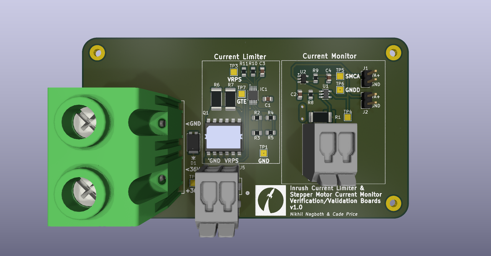
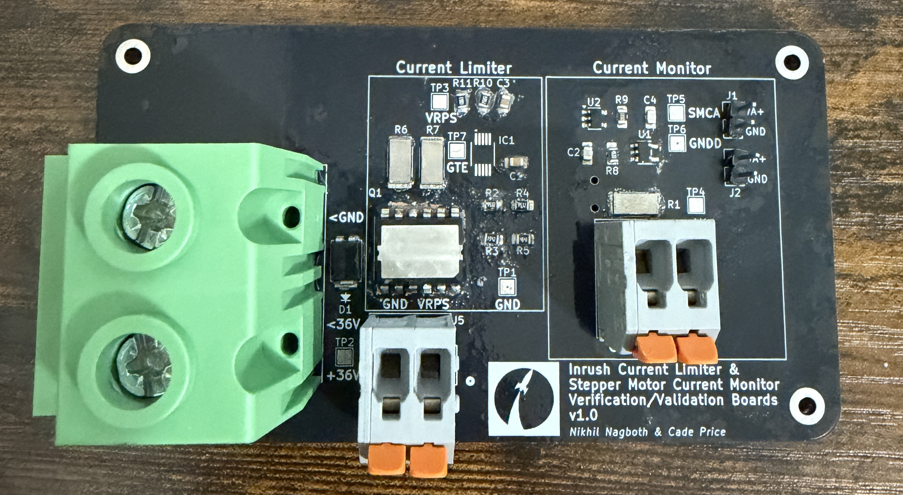
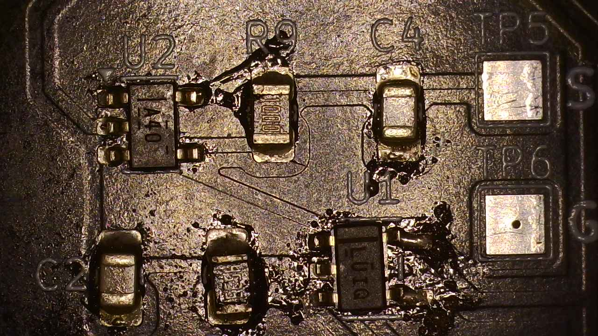

Context:
The GigaPCB serves as the primary avionics interface for the Texas A&M Rocket Engine Design (RED) liquid rocket engine test stand, integrating stepper motor controllers, pressure transducers, and thermocouples. Before the full system could be manufactured, two critical analog subsystems required standalone verification: an LM5069-based inrush current limiter and a stepper motor current monitor.
Procedure:
This was my first major project for RED. I was provided with a critical path activity to fulfill the design stage of the GigaPCB. I was provided with several screenshots of the design. Since my team was unexperienced in hardware design, I scheduled weekly meetings to teach members KiCAD - while slowly recreating the design. By early February, I had created a working draft of the PCB. I recall doing a design review while at a club (interesting experience). By 2/10, the design was submitted for order and my partner in crime Nikhil created a working BOM.

Test plans were the next objective in order. Though we had a decent idea of the desired tests, our unfamiliarity with the system meant we were unsure of how the board would interface with other AVI equipment. Unfortunately, guidance in this aspect was minimal until the final day of the project. The PCB/components were ordered on 2/25 and received on 3/5. Delays in this aspect came from business teams having to collaborate with university services and shipping times. However, my team was to go out of town for the entire upcoming week due to Spring Break.
Upon return, immense pressure was present to get the boards assembled and tested. I recall driving into College Station from McAllen and immediately heading to the workstation to become accustomed to supply locations and tools. Unfortunately, our components were scattered across boxes, and the soldering iron was dull. To make matters worse, I missed a major flaw in the PCB. The NMOs pads were not exposed since they were not defined in the mask layer. At first glance, the board appeared unusable. This was a point where I nearly had buckled, since another week of delays and hundreds of dollars in costs would be a decisive defeat for me on my first (and critical path) project. We realized, however, that the copper traces were still there and present on the top layer of the board. Thus, rather than scrapping the PCB and waiting weeks for a revision, we carefully removed the solder mask by hand to expose the underlying copper and recovered the board. With this done, assembly would resume…
I spent several late nights living in the lab with my AVI peers. On 3/18, we realized that LM5069 was nowhere to be found. That night, I saw the order sheet and realized that the desired LM5069 part that management requested was out of stock. Luckily, an alternative LM5069 package was successfully ordered the following day. On 3/19, I recall being 30 minutes late for a seminar since I was at a friend’s house using his soldering station to finish this project. At this point, it was now 99% assembled. Below are pictures of how the board currently looked and a cool shot of it zoomed in (don’t mind the extensive flux that makes it look super greasy).


Initial testing occurred on 3/29. According to the LM5069 data sheet, the GATE pin should be 12V above the output (VRPS line). We powered the test board to 36V and saw no functionality out of the NMOS. This failure resulted in an alternative inrush current limiting method being added (thermistor). Reasons for failure could be attributed to previous design flaws or the specific NMOS not being suffice. On 4/2, stepper motor current monitor testing occurred with guidance of a higher ups. This introduced me to how these motors operated. This test ended up successful, as we read a successful voltage change at SMCA1 that corresponded to the stepper motor actuating. Considerations were still made into removing the op-amp buffer stage as it fired in the process. With that, the project was concluded and the GigaPCB was ordered on 4/5.
What was Learned:
Looking back, this was one of the hardest hardware projects I have ever done. There was a combination of personal failures, major communication inconsistencies, and immense pressure. Doing this in parallel with the Course Corrector and FE Electrical & Computer was insane. However, there was a beauty to this project. I learned how one must be able to improvise when working on any electrical project. This came when exposing our NMOS pads to bridge a connection to see our current monitor work due to the op amp getting fried. I learned that engineering comes with adversity, and there will be decisive struggles in any project. Finally, I can appreciate the friendships made during the process and being able to both teach and be taught how to operate with hardware. Thus, this is a project I will hold with me for the rest of time as a major growing point.